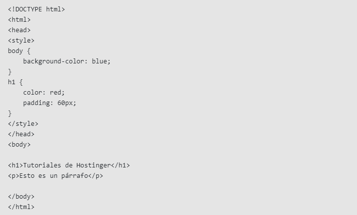

¿Qué es CSS?
El CSS (hojas de estilo en cascada) es un lenguaje de marcado que se encarga
de la apariencia de las páginas web. Controla los colores, las fuentes
y el diseño de los elementos de tu sitio web.
Este lenguaje de hojas de estilo también te permite añadir efectos o animaciones.
Puedes utilizarlo para mostrar algunas animaciones CSS como los efectos de
clic en los botones, los cargadores y los fondos animados.
Como utilizar CSS con HTML
Para utilizar CSS con HTML, puedes vincular un archivo CSS a
un archivo HTML o aplicar CSS directamente a un elemento HTML:
Vincular un archivo CSS a un archivo HTML
Para vincular un archivo CSS a un archivo HTML, puedes usar la etiqueta "link"dentro de la sección "head" del HTML. Por ejemplo, """link rel="stylesheet" href="miestilo.css""".
El navegador buscará el archivo de estilo en el mismo directorio que el archivo HTML.
Aplicar CSS directamente a un elemento HTML
Para aplicar CSS a un elemento HTML, puedes escribir el atributostyle="" y añadir el código CSS entre las comillas.
Diferencia entre los estilos CSS Inline, Externo e Interno
Hay tres tipos de estilos CSS: interno, externo e inline. Vamos a desglosarlos.CSS Interno
El CSS interno o incrustado requiere que añadas la etiqueta"style" en la sección "head" de tu documento HTML.
Este estilo CSS es un método eficaz para dar estilo a una sola página.
Sin embargo, utilizar este estilo para varias páginas requiere mucho tiempo,
ya que es necesario poner reglas CSS en cada página de tu sitio web.
- A continuación te explicamos cómo puedes utilizar el CSS interno:
- Abre tu página HTML y localiza la etiqueta de apertura "head".
- Pon el siguiente código justo después de la etiqueta "head":

- Añade las reglas CSS en una nueva línea. Aquí hay un ejemplo:

- Escribe la etiqueta de cierre:

Tu archivo HTML se verá así:

CSS Externo
Con el CSS externo, enlazarás tus páginas web a un archivo .css externo, quepuede ser creado con cualquier editor de texto de tu dispositivo (por ejemplo, Notepad++).
Este tipo de CSS es un método más eficiente, especialmente para estilizar un sitio web grande.
Al editar un archivo .css, puedes cambiar todo tu sitio de una sola vez.
- Sigue estos pasos para utilizar CSS externo:
- Crea un nuevo archivo .css con el editor de texto y añade las reglas de estilo. Por ejemplo:

- En la sección "head" de tu documento HTML, añade una referencia a tu archivo
.css externo justo después de la etiqueta "title":

CSS Inline
El CSS inline se utiliza para dar estilo a un elemento HTML específico.Para este tipo de estilo CSS, sólo tendrás que añadir el atributo style
a cada etiqueta HTML, sin utilizar selectores.
Este tipo de CSS no es realmente recomendable, ya que cada etiqueta HTML
debe ser estilizada individualmente. La gestión de tu sitio web puede resultar
demasiado difícil si sólo utilizas CSS inline.
Sin embargo, el CSS inline en HTML puede ser útil en algunas situaciones.
Por ejemplo, en los casos en los que no tienes acceso a archivos CSS o
necesitas aplicar estilos para un solo elemento.
Veamos un ejemplo. Aquí añadimos un CSS inline a la etiqueta "p" y "h1":

Quieres saber mas sobre CSS? Haz click !!AQUI!!